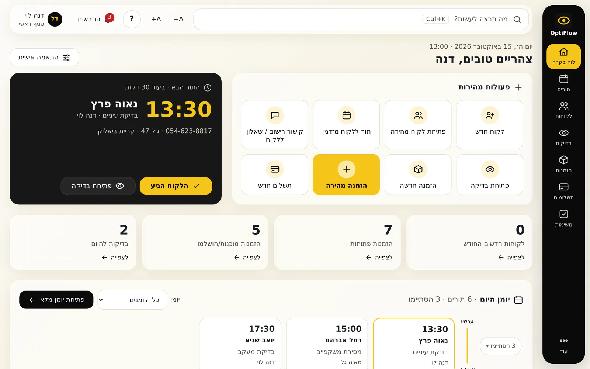
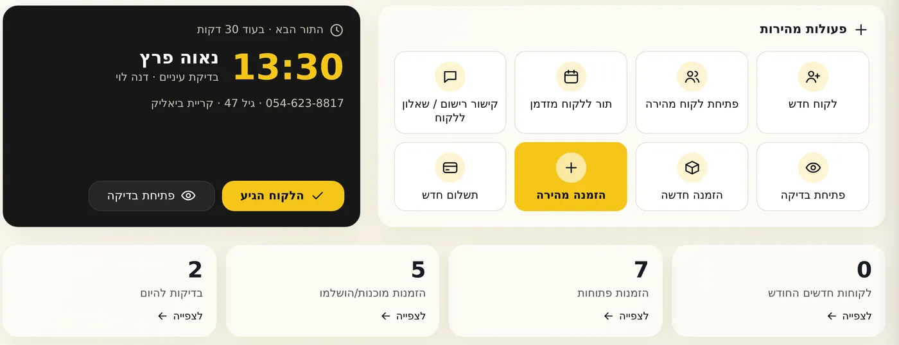
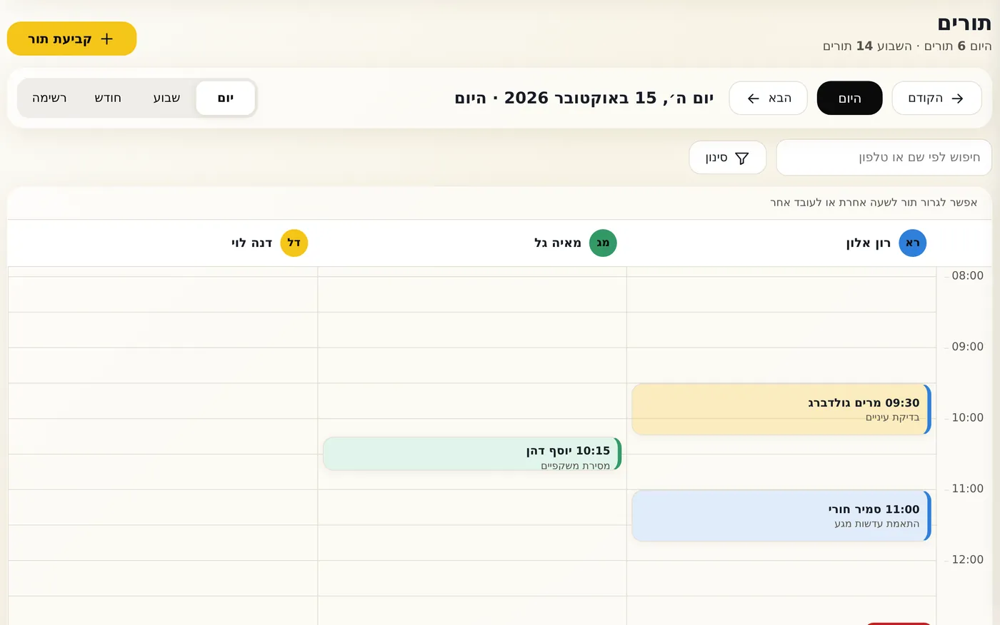
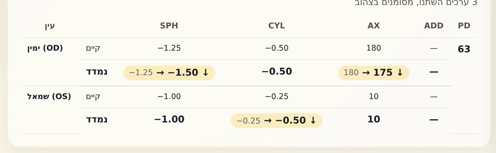
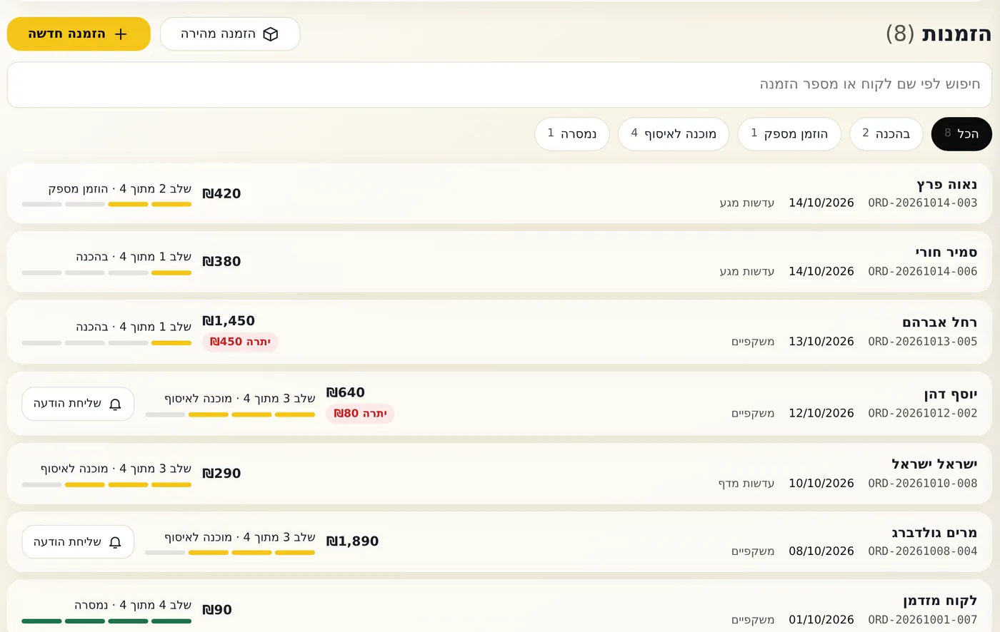
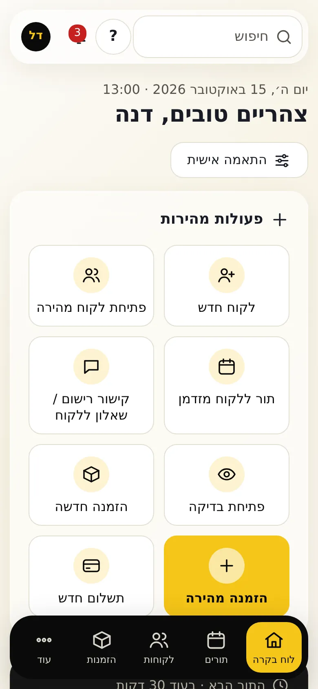
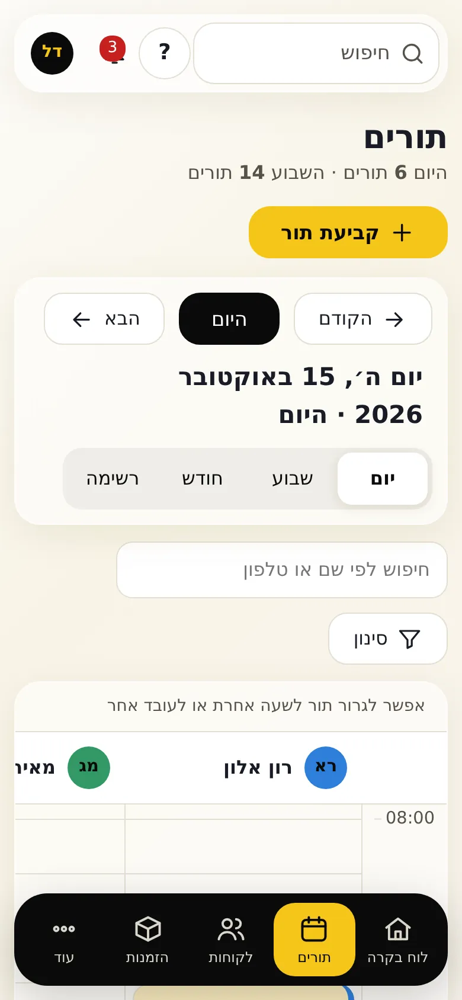

OptiFlow
סידרתי מחדש מערכת עמוסה, כדי שכל עובד יבין אותה.

01המטרה
שכל עובד בחנות יבין כל מסך בלי הדרכה. בלי להוריד אף אפשרות שקיימת היום.
המערכת עושה הרבה, וזה טוב. הבעיה הייתה שהכול הופיע בבת אחת.
02האפיון
- למי זה
- עובדי חנות אופטיקה. רובם לא טכנולוגיים, והרבה מהם מבוגרים.
- מה היה צריך לפתור
- מסך הבית היה עמוס: מספרים, יומן, משימות, 8 כפתורים ורשת קיצורים שחוזרת על התפריט.
- מה אסור היה לשבור
- כל פעולה קיימת נשארת. והלוגו, הצבעים והגופנים נשארים כמו שהם.
03ההחלטות
ההחלטות שעשו את ההבדל.
- 01
מסך הבית עונה על שלוש שאלות.
מה קורה היום, מה מחכה לי, ומה הפעולות שעושים הכי הרבה.
- 02
מילים ליד כל אייקון.
אין כפתור שהוא רק ציור. הטקסט גדול, והכפתורים גדולים.
- 03
מחיקה שואלת קודם, ושמירה אפשר לבטל.
שאלה פשוטה לפני מחיקה, וכפתור 'בטל' אחרי שמירה.
- 04
סיור קולי בכניסה הראשונה.
קול בעברית מסביר את המסכים, צעד אחרי צעד.
04מה מיוחד כאן
פרטים שכדאי לראות מקרוב.

התור הבא, בגדול
השעה, השם וסוג הבדיקה. לידו הפעולות הנפוצות.

יומן של יום, עמודה לכל עובד
רואים מי פנוי, וגוררים תור לשעה או לעובד אחר.

המרשם החדש מול הקודם
ערכים שהשתנו מסומנים בצהוב, עם חץ מהישן לחדש.

איפה כל הזמנה עומדת
פס התקדמות, שלב מתוך 4, והסכום שעוד צריך לגבות.
05מה השתנה
מה השתנה, בלי להוריד כלום.
במערכת המקורית יש נתונים של לקוחות אמיתיים, אז הנה מה שהשתנה, מסך אחרי מסך.
06בטלפון ובמחשב
אותה מערכת, בטלפון ובמחשב.
בטלפון, התפריט עובר לתחתית המסך, עם חמישה כפתורים.


רוצים שגם האתר שלכם יהיה ברור ככה?
מדברים ישירות איתי. מענה בוואטסאפ 24/7.